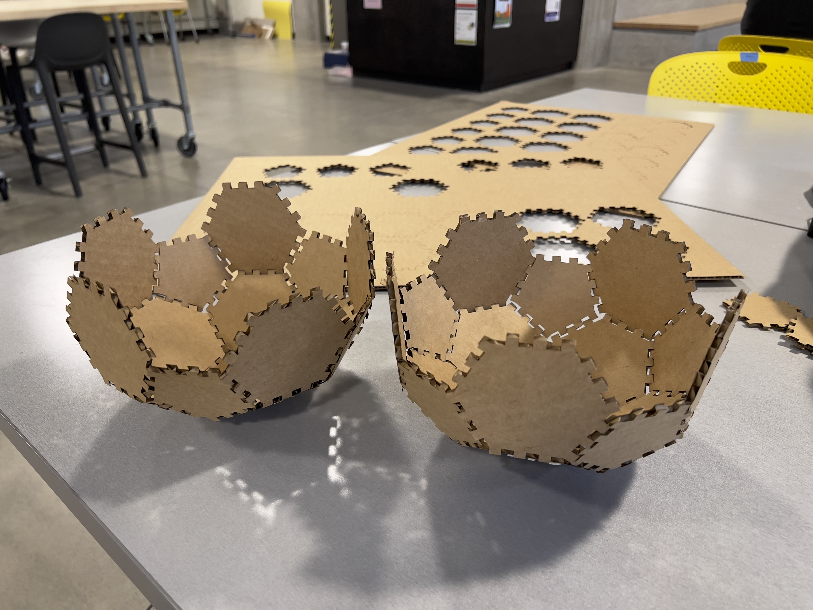

A1: Press Fit Construction Kit
Constructing curves by press-fitting pieces of laser cut pentagons and hexagons.
A2: Parametric Modeling

Creating parametric models for a construction kit that takes inputs for different depth sizes.
A3: Learning 3D Printing

Setting up my 3D printer, experimenting with settings and printing nested objects.
A4: Subtractive Manufacturing

Constructing a box made up of flat panels with sides that snap to each other using boxjoints and dogbones.
A5: Getting Meshy, and Lamps

Practicing with meshes, experimenting with voronoi patterns, and attempting a lamp.
A6: Molding and Casting

Experimenting with meta-molding techniques using 3D printing, silicone and hydrostone.
A7: Final Project Proposal

Planning how to combine multiple digital fabrication techniques to create a custom chess set.
A8: Final Project

A chess set created with 3D printing, laser cutting, subtractive manufacturing, and molding and casting.